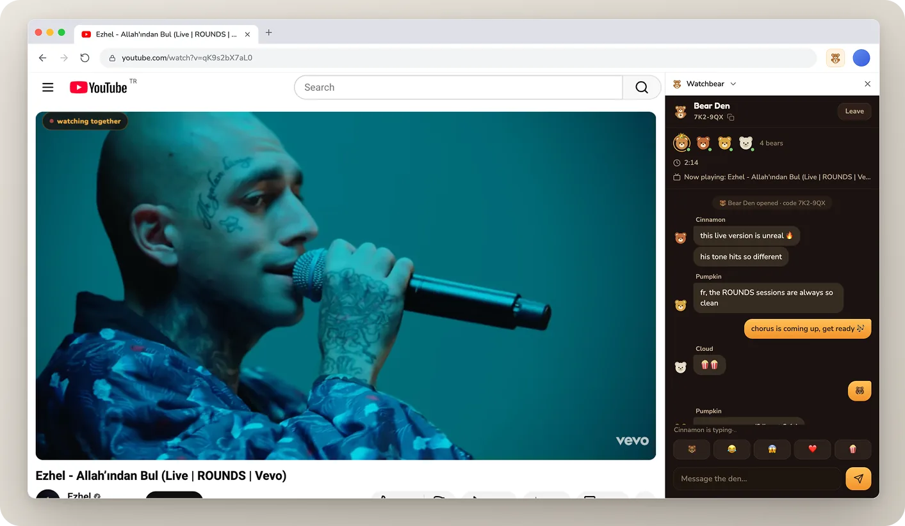

Watch Netflix, YouTube and more together, on the same second.
Watchbear is a free watch party extension for Chrome. Start a room, send the link, and everyone's player plays, pauses and skips together, with video chat beside the film.
These are real players. Pause yours or drag the bar, and Ece's and Maya's stay on your frame.
- No card, no second account
- Up to 50 people a room
- Video and voice chat included
Playing: one scene from Caminandes 3: Llamigos by the Blender Foundation, CC BY 3.0.
Nobody watches a blurry screen share.
On a call, one person's screen is squeezed into a video stream: soft picture, dropped frames, sound that slips. Watchbear does the opposite. Every friend plays their own copy at full quality, and only the playback position travels between you.
How to host a Netflix watch party
Netflix has no watch party button on computers. Watchbear adds one, and it takes about a minute to set up.
What everyone needs: Chrome on a laptop or desktop, a Google account to sign in, and their own Netflix account.
Everyone streams from their own Netflix account, because only the position is shared. The full guide to watching Netflix together covers the details.
- Add Watchbear to Chrome and pin the bear to your toolbar.
- Open the title on Netflix and click the bear. Your room opens in a side panel.
- Send the invite link. Friends open it, sign in to their own Netflix, and land on the same title.
- Press play. Anyone can pause or skip, and every player follows.

Watch YouTube together, or anything with a player
Music videos, trailers, a lecture, a long video essay. Open it, click the bear, and send the link. The same room works on YouTube, Vimeo and most sites with a standard video player, so you can move from a Netflix film to a YouTube clip without switching tools.
Step by step: how to watch YouTube together with friends.
Video and voice chat, free for everyone
Other watch party tools put calling behind a paid plan. In Watchbear it is on from the first room you open.
- Cameras start off
- Switch yours on with one click. Faces sit beside the film, never over it.
- Talk over the movie
- Voice chat with mute and a marker for whoever is speaking.
- Peer to peer
- Sound and picture go straight between you. Our server only introduces you, and messages are not stored on it.
- The film comes first
- When a computer struggles, Watchbear lowers the camera quality before the film can stutter.
Watchbear, Teleparty or screen sharing?
| Feature | Watchbear | Teleparty | Screen sharing on a call |
|---|---|---|---|
| Price | Free | Free plan, Premium from $3.99 a month billed yearly | Free |
| Video and voice chat | Free, up to 8 at once | Premium | Yes |
| Picture quality | Full, each person plays their own copy | Full, each person plays their own copy | Compressed by the call |
| Sites | Netflix, YouTube, Vimeo and most standard video players | A named list, including Netflix, Disney+, Hulu, Prime Video and YouTube | Anything on the host's screen |
| Phones | Not yet, needs a computer | iOS and Android apps | Depends on the call app |
Teleparty details as of November 2026. Where Teleparty is the better pick, the full Watchbear vs Teleparty comparison says so.
For watching apart, together
-
Long-distance couples
A film night across time zones that feels less like a call. Ideas in long-distance movie night.
-
Friends in different cities
One link in the group chat and the whole crew is on the same scene. See how to host an online watch party.
-
Families far away
Sign-in is one click with Google, so nobody has to make a new account or remember a password.
-
Study groups
Pause the lecture for a question and everyone stops on the same slide.
Players drifting apart on another tool? Here is why watch parties go out of sync.
Questions
Is Watchbear free?
Yes. Hosting a room, joining one, video and voice chat, messages and reactions are all free, and nothing asks for a card. Everyone signs in with their Google account.
How do you do a watch party on Netflix?
Install Watchbear in Chrome, open the title on Netflix, click the bear to start a room and send the invite link. Each friend opens it, signs in to their own Netflix, and every player follows play, pause and skip.
Does everyone need their own Netflix subscription?
Yes, on paid services each person needs their own account. Watchbear shares only the playback position, never the film itself, so everyone presses play on their own copy.
Does Netflix have a watch party feature?
No. Netflix has no built-in watch party on computers, which is why an extension is needed to keep everyone on the same point in the film.
Which sites does Watchbear work with?
Netflix, YouTube, Vimeo and other pages built on a standard video player. Netflix gets dedicated handling for its player. On other sites Watchbear looks for the main video on the page instead of checking a fixed list.
Is Watchbear screen sharing?
No. Each person plays their own copy at full quality, and only the playback position travels between you, so nothing turns blurry or lags behind the sound.
How many people can join a watch party?
Up to 50 people in a room, and up to 8 of them on camera and microphone at once.
Do calls go through Watchbear's servers?
No. Voice and video go peer to peer between the people in the room. The server only introduces participants to each other, and messages are not stored on it.
Does Watchbear work on phones?
Not yet. Watchbear is a Chrome extension, so everyone needs Chrome on a laptop or desktop computer.

Pick a film. Send one link.
Add Watchbear to Chrome and start your first watch party. It's free with your Google account.
Add to Chrome, free